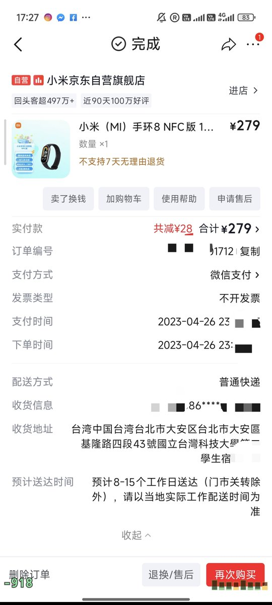

奶昔🥤
@realNyarime
@changwei1006 扯个题外话，苗栗什么时候独立？

Chang Wei 昌维
@changwei1006
求推荐手环or手表，最好带NFC，手表最好要有WearOS系统，可以自己写APP或者安装APP或者使用Google全家桶比如Google Map之类的，而且最好轻便一点，因为我的手很瘦小加上我除了洗澡以外会全天候佩戴
（备注：我当前的主力手机是小米15Ultra，之后可能会换Vivo X300 Ultra或者其他拍照很好的安卓手机） https://t.co/usvvWq00YC